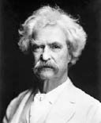

(1835 – 1910)

Halley kuyrukluyıldızının dünyaya geldiği 1835 yılında doğmuştu ve 1900 yılında kendisiyle yapılan bir söyleşide kuyruklu yıldızın bir dahaki gelişinde, 1910'da ölmesinin iyi olacağını söylemişti, aynen de öyle oldu! "Tom Sawyer", "Huckleberry Finn'in Maceraları" gibi unutulmaz çocuk romanlarının yazarı Mark Twain Halley kuyrukluyıldızı dünyanın yanıbaşından geçişinin ertesi günü öldü.
Asıl adı "Samuel Langhorne Clemens" olan, ama tüm dünyanın Mark Twain (okunuşu: Mark Tveyn) olarak tanıdığı Amerikalı mizah ustası ve roman yazarı, 30 Kasım 1835'te en ünlü romanlarının da mekanı olacak olan Missouri'de dünyaya geldi. Eserlerinde gülmenin güzelliğini, köleliğin ne kadar kötü bir şey olduğunu anlatmaya çabaladı ve "iki kulaç derinlik" anlamında bir denizcilik terimi olan Mark Twain imzası ile otuz kitap yayımladı.
Mark Twain 11 yaşındayken babası ölünce, beşinci sınıftan sonra okulu bıraktı ve bir matbaada dizgici olarak çalışmaya başladı. 18 yaşına gelince New York City'ye ve Philedelphia'ya gitti ve kısa yazılarıyla enikonu bir şöhret edinmeye başladı. Dört yıl sonra Missouri'ye döndüğünde Mississippi Nehri'ndeki buharlı gemilerde kaptanlık yapmak istedi. Kaptanlık sınavlarına hazırlık için çalıştı; nehrin her yerini öğrenmesi iki yılını aldı. Çok iyi öğrendiği bu yerler romanlarının mekanını oluşturdu.
24 yaşında kaptanlık ehliyetini aldı ve Amerikan İç Savaşı çıkıp nehir gezileri yasaklanana kadar nehirde kaptanlık yaptı. Savaşa gönüllü olarak katıldı, ancak 14 günlük askeri eğitimden sonra ordudan ayrılıp Nevada'da vali olan ağabeyi Orion'ın yanına gitti. Kardeşi ile birlikte bir süre posta arabasıyla bölgeyi gezdikten sonra, zengin olma hayaliyle madencilik yaptı. Madencilik işi başarısızlıkla sonuçlandı.
Bazı gezi yazıları ve makaleler yazarak çeşitli eyaletleri dolaştı. Mark Twain adıyla imzaladığı ilk makalesi, Carson'dan Mektup adlı yazısıydı. 18 Kasım 1865 günü New York Saturday Press adlı gazetede yayımlanan Jim Smiley ve Zıplayan Kurbağası adlı hikaye ile edebiyat alanında çıkış yaptı. Bir maden ocağı kampında madencilerden dinlediği yerel bir öyküyü kendi ağzından anlatarak ünü yakalamıştı. Öyküyü 1867'de yayımlanan ilk kitabına da aldı. 1866'da bir gazete adına Hawaii'ye giderek oradan yazılar gönderdi. İki sene sonra yine yerel bir gazetenin isteği üzerine Akdeniz'de bir gemi turuna çıktı ve gezi yazılarını Dışarıdaki Masumlar (1867) adlı kitabında topladı. Bu eseri ile ülkesinde çok ünlü bir güldürü yazarı oldu.
Dışarıdaki Masumlar kitabının getirdiği ekonomik rahatlık sayesinde bir arkadaşının kızkardeşi olan ve ilk görüşte âşık olduğu Oliva Langdon ile 1870 yılı Şubat ayında New York'ta evlendi. Bir süre eşi ile birlikte New York'un Buffalo kentinde yaşadı; bir gazetede editör ve yazar olarak çalıştı. Öksüz ve yaramaz bir çocuğun Mississippi'de geçen maceralarını anlattığı, 1875 yılında yayımlanan Tom Sawyer'in Maceraları adlı eseri çok sevildi. Avrupa ile ilgili bir kitap yazmak için bir yayınevi ile 1878'de anlaşma yapınca ailesi ile Avrupa seyahatine gitti, 1879 eylülünde geri döndü. 1881'de yayımlanan Prens ve Dilenci adlı romanını, kızları Susy ve Clara'ya ithaf etti.
Ellinci yaş gününü kutladığı 1885 yılında yayımlanan Huckleberry Finn'in Maceraları adlı eseri, kimilerince Amerikan edebiyatının ilk büyük eseri olarak değerlendirildi. Bu kitapta da yaramaz ve asi bir çocuğun hikayesini anlattı. Huckleberry Finn'den sonra beş yıl boyunca kitap yayımlamayı bırakan Twain, zengin olmak umuduyla işadamlığına soyundu. Para kazanmak için çeşitli işlere yatırım yapan Mark Twain'in girişimleri hep para kaybıyla sonuçlandı. 1885'te kurduğu yayınevi ise iflas etmesine yol açtı.
Yaşlılık yılarında sömürgeciliği, ırk düşmanlığını, kazanç hırsını, dinsel ikiyüzlülüğü sert bir dille eleştiren yazılar yazan Mark Twain 1905'te, yetmişinci yaşını Beyaz Saray'da Theodore Roosevelt'in onun onuruna verdiği yemekte kutladı. 1907'de Oxford Üniversitesi kendisine fahri doktora verdi. Mark Twain 1906'da yazmaya başladığı biyografisini tamamlayamadan, geçirdiği kalp rahatsızlığı sonucu 21 Nisan 1910 günü Connecticut'ta hayatını kaybetti.
Seçme Yapıtları: Jim Smiley ve Zıplayan Kurbağası ve Diğer Öyküler (1867), Dışarıdaki Masumlar (1869), Tom Sawyer'ın Maceraları (1876), Prens ve Dilenci (1882 – Çalınan Taç, Türkiye İş Bankası Yayınları, 2011), Mississipi'de Yaşam (1883), Huckleberry Finn'in Maceraları (1884 –Can Yayınları, 2009), Ekvatorun İzinde (1897), Adem'le Havva'nın Güncesi (1904)